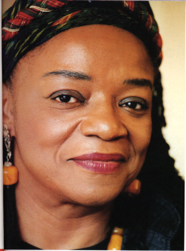

Bio

Faith Ringgold or Faith Jones was born to Andrew and Willie Jones. Born on October 8, 1930 in Harlem, New York City, she credits her creativity to the artistic society she grew up in after the Harlem Renaissance. Her father would tell stories and her mother was a fashion designer. This led her to create stories in her quilts.
Ringgold had serious asthma that caused for her to pursue visual arts.
Through the support and encouragement of her family, Ringgold majored in art at the City College of New York at the age of 20. She wasn’t able to major in art because only men were allowed to major in art. Instead, she had to major in art education. She would be allowed to teach art but not make art.
In 1950, Ringgold married a jazz pianist, Robert Wallace, and had two children, Michele and Barbara Wallace. She divorced Wallace four years later due to his heroin addiction. She married her second husband, Burdette Ringgold a couple of years later.
Ringgold gained her B.A. in 1955, and in 1959, gained her master’s degree from City College. From 1987 through 2002, Ringgold worked as a professor at the University of California in San Diego.
In the 1970s, Ringgold joined several organizations that called for a change for women and African-Americans. African-Americans and women were segregated against having high-paying jobs or same-paying jobs as white males. In universities, women were not allowed to pursue professions that were considered for males only.
She works with a variety of media: painting, sculpture, and performance art. She is also the author and illustrator of several books. Her sculptures consisted of masks, full-bodies costumes with openings for eyes and mouths. Her performance art included singing, dancing, masks, and storytelling. However, she is best known for her hand-sewn quilts, uniquely depicting stories or themes. Her quilts are usually bright-colored; several of her quilts serve as cover pages for her books. Some of her quilts include text to explain the story quilts. Her artwork expresses political and societal issues such as racism. She includes these issues in her work due to racism, sexism, and segregation she experienced in her life. Her most famous works include: Tar Beach (1998), Street Story Quilt (1985), Freedom of Speech (1990), Matisse’s Model (1991), Dream 2: King and the Sisterhood (1998), and Bitter Nest#2: Harlem Renaissance Party (1988).
She has been recognized by many organizations, such as the NAACP and met with President Obama on receiving her Peace Corps.
Now 86, she is known for being a political and feminist artist, currently living in Englewood, New Jersey with her husband, Burdette Ringgold.
Awards
The Creative Artists Public Service Award (1971).
The John Simon Guggenheim Memorial Foundation Fellowship (1987);
The New York Foundation For the Arts Award (1988);
National Endowment For the Arts Award (1989)
The La Napoule Foundation Award in France (1990);
National Endowment For the Arts Award (1978)
City College of New York’s First Annual Cultural Arts Award (2011)
Dedicators Award (2001)
Honoree for the NYC Conference of the Women's Caucus for Art (1994)